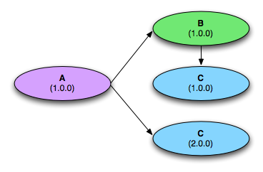
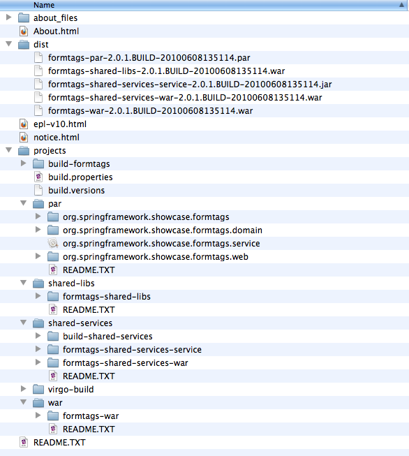
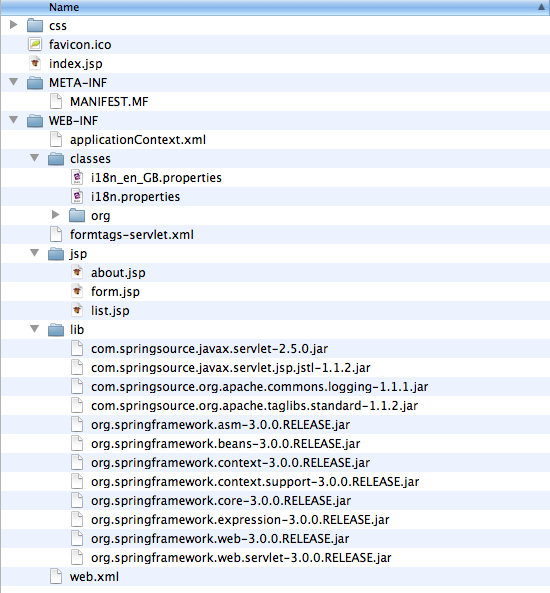
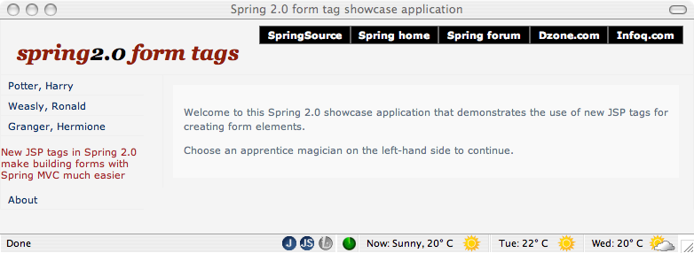
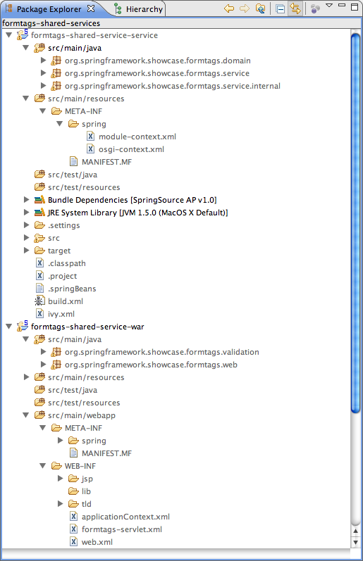
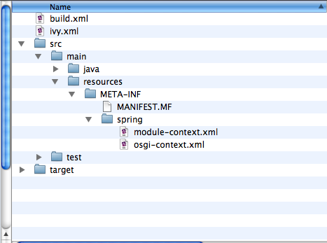
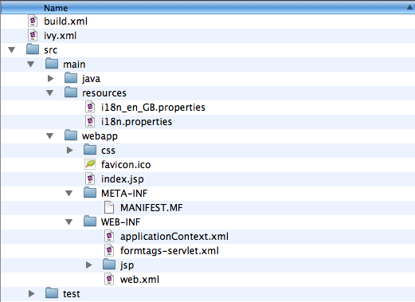
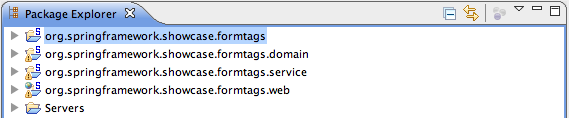
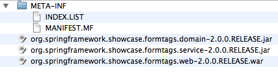

Table of Contents
- Preface
- 1. Prerequisites
- 2. Introduction to the Virgo Server for Apache Tomcat
- 3. Deployment Architecture
- 4. Developing Applications
- 4.1. Anatomy of a Bundle
- 4.2. Creating PARs and Web Applications
- 4.3. Creating Plans
- 4.4. Creating and Using Configuration Artifacts
- 4.5. Using Spring, Spring DM, and Blueprint
- 4.6. Programmatic Access to the Servlet Context
- 4.7. Web Application Manifest Processing
- 4.8. Working with Dependencies
- 4.9. Application Trace
- 4.10. Application Versioning
- 5. Migrating to OSGi
- 6. Migrating Form Tags
- 7. Common Libraries
- 8. Known Issues
- 8.1. JPA Entity Scanning
- 8.2. ClassNotFoundError When Creating a Proxy
- 8.3. Creating proxies with CGLIB for Package Protected Types
- 8.4. Virgo Jetty Server Restrictions
- 8.5. Default Web Application Bundle Headers
- 8.6. Hibernate Resolution Issue
- 8.7. Scoping and Substitutable Exports
- 8.8. EclipseLink Resolution Issue
Increasing complexity in modern enterprise applications is a fact of life. Developers not only have to deal with complex business logic, but also a myriad of other concerns such as security, auditing, exposing business functionality to external applications, and managing the evolution of these concerns. The Spring Framework addresses these needs by offering a Plain-Old Java Object (POJO) based solution that lets you focus on your business logic.
Complex applications pose problems that go beyond using the right set of technologies. You need to take into account other considerations such as a simplified development process, easy deployment, monitoring deployed applications, and managing changes in response to changing business needs. This is where the Virgo Server comes into play. It offers a simple yet comprehensive platform to develop, deploy, and service enterprise applications. In this Programmer Guide, we explore the runtime portions of the Virgo Server, the Virgo Server for Apache Tomcat, Virgo Jetty Server and the Virgo Kernel, and learn how to develop applications to benefit from their capabilities.
Although this guide is written primarily for Virgo Server for Apache Tomcat programmers, much of it is also useful for Virgo Kernel programmers who should simply ignore the web-related sections.
This guide is written primarily for Virgo Server for Apache Tomcat programmers. Although a base version of Virgo Nano, without the new provisioning system, is used to build the Virgo Server for Apache Tomcat, much of this guide does not apply to Virgo Nano. The VN lacks regions support but has much improved runtime footprint and startup time and also provides support for p2 provisioning. The Virgo Nano features are covered better in the User Guide.
Virgo requires Java SE 6 or later to be installed. Java is available from Sun and elsewhere.
To make effective use of the Virgo Server for Apache Tomcat, you should also refer to the following:
- Virgo User Guide
- Virgo Tooling Guide
- Spring Dynamic Modules Reference
- Blueprint Container Specification (in the OSGi 4.2 and 5.0 Enterprise Specifications)
- Spring Framework Reference
In this chapter, we provide an overview of the Virgo Server for Apache Tomcat focusing on what it is, what benefits it provides to developers and administrators, and why you should use it.
The Virgo Server for Apache Tomcat, or VTS for short, is the runtime portion of the Virgo Server. It is a lightweight, modular, OSGi-based runtime that provides a complete packaged solution for developing, deploying, and managing enterprise applications. By leveraging several best-of-breed technologies and improving upon them, the VTS offers a compelling solution to develop and deploy enterprise applications.
The Virgo Server for Apache Tomcat is built on top of the following core technologies:
- Spring Framework, obviously!
- Tomcat as the web container.
- OSGi R4.3.
- Equinox as the OSGi implementation.
- Spring Dynamic Modules for OSGi for working with OSGi in a Spring application.
- SpringSource Tool Suite for developing applications.
Note, however, that the Virgo Server for Apache Tomcat isn’t just a combination of these technologies. Rather, it integrates and extends these technologies to provide many features essential for developing, deploying, and managing today’s enterprise Java applications.
The following diagram presents a high-level overview of the VTS’s architecture.

At the heart of the Virgo Server for Apache Tomcat is the Virgo Kernel or VK. The VK is an OSGi-based kernel that takes full advantage of the modularity and versioning of the OSGi platform. The VK builds on a base version of Virgo Nano or VN and extends its capabilities for provisioning and library management, as well as providing core functionality for the VTS. The VN maintains a minimal runtime footprint and startup time. It builds on top of a pure Equinox, extending it with more sophisticated diagnostics and supportability functionality. The VN supports full p2 provisioning. This feature is not included in the Virgo Nano Base that the VK is built on.
To maintain a minimal runtime footprint, OSGi bundles are installed on demand by the VN. On subsequent restarts these core bundles are warm-started thus reducing the startup time. This allows for an application to be installed into a running VTS and for its dependencies to be satisfied from an external repository. Not only does this remove the need to manually install all your application dependencies, which would be tedious, but it also keeps memory usage to a minimum.
As shown in the figure, VK runs on top of VN that extends Equinox within a standard Java Virtual Machine. Above the VK further layers contribute functionality to the VTS. Such as management and web application support.
Version 3.6.2.RELEASE of the Virgo Server for Apache Tomcat supports bundle, plan, PAR, configuration, Web Application Bundle (WAB), and WAR artifacts, which enable you to build sophisticated web applications. This includes support for standard Java EE WARs, "shared library" WARs, and "shared services" WARs, each of which will be covered in greater detail in Chapter 3, Deployment Architecture.
![[Important]](images/important.gif) | Important |
|---|---|
The Virgo Nano has a different provisioning system which isn't included in the Virgo Nano Base on which the VK and the VTS are built. Version 3.6.2.RELEASE of the Virgo Nano supports bundle, p2 feature, Web Application Bundle (WAB), and WAR artifacts, which enable you to build sophisticated web applications too, taking full advantage of p2's dependency resolution, automated download and fail-early mechanics. The Virgo Nano does NOT support plan, PAR or configuration artifacts. New features are provisioned via update sites or p2 repositories. Brief overview of p2 and it's mechanics is available on this blog. The VN's default web container implementation is Gemini Web. |
You could deploy a web application in a stand-alone servlet engine or application server. Or you could even deploy directly in an OSGi container such as Equinox. However, deploying in the Virgo Server for Apache Tomcat offers a number of key benefits that make it both more appealing and more suitable for enterprise application development.
While many applications deployed in the Virgo Server for Apache Tomcat will take advantage of OSGi capabilities, not all applications need such sophistication. For example, development teams may initially choose to continue packaging existing web applications as standard WAR files and then gradually migrate toward a fully OSGi-based packaging and deployment model. The Virgo Server for Apache Tomcat makes such migrations easy for developers by supporting multiple packaging and deployment formats. These formats and migration strategies are discussed in greater detail in Chapter 5, Migrating to OSGi and Chapter 6, Case Study: Migrating the Form Tags Sample Application.
Prior to the release of the Virgo Server for Apache Tomcat, developing and deploying OSGi applications involved inherent complexity such as:
- Obtaining OSGi bundles for popular Java libraries: For optimal benefits, every technology you use in an OSGi application must be packaged as OSGi bundles. Currently, this involves manually converting JAR files into bundles and making sure that any libraries needed by those bundles are also available as OSGi bundles. The SpringSource Enterprise Bundle Repository is a good source of popular pre-bundled libraries.
- Package management complexity:
OSGi bundles use other bundles through
Import-Packagemanifest headers. Many applications use a set of common technologies (e.g., an ORM solution, a web framework, etc.). Combining these two characteristics leads to duplicated configuration in the form of repeated and verboseImport-Packagestatements. - Lack of application-level isolation:
In OSGi everything is a bundle, and all bundles share the same OSGi Service Registry.
To highlight how conflicts can arise between applications and their services in this
shared service registry, consider the following scenarios.
-
Application
Ais comprised of bundlesBandC. In a standard OSGi environment, if you attempt to install two instances of the same version of applicationA(i.e., two sets of bundlesBandC), a clash will occur, because you cannot deploy multiple bundles with the sameBundle-SymbolicNameandBundle-Versioncombination. -
Application
A1is comprised of bundlesB1andC1. Similarly, applicationA2is comprised of bundlesB2andC2. Each bundle has a unique combination ofBundle-SymbolicNameandBundle-Version. BundlesB1andB2both export serviceSwhich is imported by bothC1andC2. In contrast to the previous example, there is no conflict resulting from duplicateBundle-SymbolicName/Bundle-Versioncombinations; however, there is a clash for the exported serviceS. Which serviceSwill bundlesC1andC2end up using once they are installed? Assuming bundlesB1andC1are intended to work together, you would not want bundleC1to get a reference to serviceSfrom bundleB2, because it is installed in a different logical application. On the contrary, you typically want bundleC1to get a reference to serviceSexported by bundleB1, but in a standard OSGi environment this may not be the case.
-
Application
Furthermore, since standard OSGi does not define a notion of an application as a set of bundles, you cannot deploy or undeploy an application and its constituent bundles as a single unit.
The Virgo Server for Apache Tomcat introduces a number of features to solve these issues:
- A full set of OSGi bundles for many popular Java libraries to get you started quickly with creating OSGi applications.
-
An OSGi library concept that obviates the need to
duplicate verbose
Import-Packagestatements. - The PAR packaging format which offers application-level isolation and deployment.
- The concept of a plan, which is an XML file that lists a collection of bundles that Virgo Server for Apache Tomcat should load together as a single application. Conceptually, plans are very like PARs, except that a plan describes the contents of the application rather than a PAR that actually contains them.
Identifying why an application won’t deploy or which particular library dependencies are unsatisfied is the cause of many headaches! Similarly, production time errors that don’t identify the root cause are all too familiar to Java developers. The VTS was designed from the ground up to enable tracing and First Failure Data Capture (FFDC) that empower developers with precise information at the point of failure to fix the problem quickly.
The Virgo Server for Apache Tomcat offers several choices when it comes to deploying applications. Each choice offers certain advantages, and it is important to understand those in order to make the right choice for your application. In this chapter, we take a closer look at the choices offered, compare them, and provide guidelines in choosing the right one based on your specific needs.
The VTS supports standard self-contained WAR files thus allowing you to use the Virgo Server for Apache Tomcat as an enhanced web server. The VTS also supports the Shared Libraries WAR format which allows for slimmer WAR files that depend on OSGi bundles instead of including JAR files inside the WAR. The Shared Services WAR format allows developers to further reduce the complexity of standard WARs by deploying services and infrastructure bundles alongside the WAR. A shared services WAR will then consume the services published by those bundles. To complete the picture, the VTS supports the new OSGi-standard Web Application Bundle deployment format for web applications that builds on the benefits provided by a shared services WAR. In addition to this, VTS provides additional conveniences for developing and deploying Spring MVC-based web applications.
For applications consisting of multiple bundles and web applications, plans and the PAR format are the primary deployment models that take advantage of OSGi capabilities. We will explore all of these formats and their suitability later in this guide.
The Virgo Server for Apache Tomcat supports applications packaged in the following formats:
When you deploy an application to the VTS, each deployment artifact (e.g., a single bundle, WAR, PAR, or plan) passes through a deployment pipeline. This deployment pipeline is responsible for processing applications of certain types (i.e., application type). The 3.6.2.RELEASE release of the VTS natively supports deployers analogous to each of the aforementioned packaging options.
Let’s take a closer look now at each of the supported deployment and packaging options to explore which one is best suited to your application.
At its core, the Virgo Server for Apache Tomcat is an OSGi container. Thus any OSGi-compliant bundle can be deployed directly on the VTS unmodified. You’ll typically deploy an application as a single bundle or a set of stand-alone bundles if you’d like to publish or consume services globally within the container via the OSGi Service Registry.
For Web Application Archives (WAR), the Virgo Server for Apache Tomcat provides support for the following three formats.
Each of these formats plays a distinct role in the incremental migration path from a standard Java EE WAR to an OSGi-ified web application.
Standard WAR files are supported directly in the VTS. At deployment time, the WAR file is transformed into an OSGi bundle and installed into Tomcat. All the standard WAR contracts are honoured, and your existing WAR files should just drop in and deploy without change. Support for standard, unmodified WAR files allows you to try out the Virgo Server for Apache Tomcat on your existing web applications and then gradually migrate toward the Shared Libraries WAR and Shared Services WAR formats.
In addition to the standard support for WARs that you would expect from Tomcat, the VTS also enables the following features:
Spring-driven load-time weaving (see Section 6.8.4, “Load-time weaving with AspectJ in the Spring Framework").
Diagnostic information such as FFDC (first failure data capture)
The main benefit of this application style is familiarity -- developers know how to create a WAR file! You can take advantage of the VTS’s added feature set without modifying the application. The application can also be deployed on other Servlet containers or Java EE application servers.
You may choose this application style if the application is fairly simple and small. You may also prefer this style even for large and complex applications as a starting point and migrate to the other styles over time as discussed in Chapter 5, Migrating to OSGi .
If you have experience with developing and packaging web applications using
the standard WAR format, you’re certainly familiar with the pains of
library bloat. So, unless you’re installing shared libraries in a common
library folder for your Servlet container, you have to pack all JARs required by
your web application in /WEB-INF/lib. Prior to the release of
the Virgo Server for Apache Tomcat, such library bloat has essentially been the norm for web
applications, but now there is a better solution! The Shared Libraries WAR
format reduces your application’s deployment footprint and eradicates
library bloat by allowing you to declare dependencies on libraries via standard
OSGi manifest headers such as Import-Package and Require-Bundle . The VTS provides additional
support for simplifying dependency management via the Import-Library and Import-Bundle manifest headers
which are essentially macros that get expanded into OSGi-compliant Import-Package statements.
![[Tip]](images/tip.gif) | Tip |
|---|---|
For detailed information on which libraries are already available, check out the SpringSource Enterprise Bundle Repository . |
Once you’ve begun taking advantage of declarative dependency management
with a Shared Libraries WAR, you’ll likely find yourself wanting to take
the next step toward reaping further benefits of an OSGi container: sharing
services between your OSGi-compliant bundles and your web applications. By
building on the power and simplicity of Spring-DM, the Shared Services
WAR format puts the OSGi Service Registry at your finger tips. As
a best practice you’ll typically publish services from your domain,
service, and infrastructure bundles via <osgi:service ...
/> and then consume them in your web application’s
ApplicationContext via <osgi:reference ... />. Doing so
promotes programming to interfaces and allows you to completely decouple your
web-specific deployment artifacts from your domain model, service layer, etc.,
and that’s certainly a step in the right direction. Of the three supported
WAR deployment formats, the Shared Services WAR is by far the most attractive in
terms of modularity and reduced overall footprint of your web applications.
Virgo Server for Apache Tomcat fully supports the OSGi Web Applications standard. Using the reference implementation from Gemini Web that was developed by SpringSource from an offshoot of the original VTS codebase. This RI is now fully integrated in VTS as the basis of the support for web application deployment.
The OSGi Web Applications specification introduces the concept of a Web Application Bundle, which is a WAR that is also a bundle. The specification defines how WAR files are transformed into bundles automatically as needed.
You can find an introduction to the Web Container in blog entries written by the Virgo team here and here.
Virgo Server for Apache Tomcat provides a variety of extensions to the Web Container that allow you to construct sophisticated applications. The table below summarises the extensions that are available or in development.
Table 3.1.
| Feature | Description |
|---|---|
| Instrumentable ClassLoaders | All web bundle ClassLoaders are instrumentable by Spring’s load-time weaving infrastructure. |
| Support for exploded bundles/WARs | Bundles/WARs in directory form can be deployed as Web Application Bundles |
| Support for scanning TLDs in dependencies | As per the Web Application specification, all TLDs located inside a web bundle are located using the rules defined in the JSP 2.1 specification. In VTS, the dependencies of a Web Application Bundle are also scanned for TLDs following the rules outlined in JSP 2.1 |
A PAR is a standard JAR which contains all of the modules of your application (e.g., service, domain, and infrastructure bundles as well as a WAR or web module for web applications) in a single deployment unit. This allows you to deploy, refresh, and undeploy your entire application as a single entity. If you are familiar with Java EE, it is worth noting that a PAR can be considered a replacement for an EAR (Enterprise Archive) within the context of an OSGi container. As an added bonus, modules within a PAR can be refreshed independently and on-the-fly, for example via the Virgo Eclipse IDE Tooling (see the Virgo Tools Guide).
Many of the benefits of the PAR format are due to the underlying OSGi infrastructure, including:
Fundamentally modularized applications: instead of relying on fuzzy boundaries between logical modules in a monolithic application, this style promotes physically separated modules in the form of OSGi bundles. Then each module may be developed separately, promoting parallel development and loose coupling.
Robust versioning of various modules: the versioning capability offered by OSGi is much more comprehensive than alternatives. Each module can specify a version range for each of its dependencies. Bundles are isolated from each other in such a way that multiple versions of a bundle may be used simultaneously in an application.
Improved manageability: each bundle may be deployed or undeployed in a running application. This allows modifying the existing application to fix bugs, improve performance, and even to add new features without having to restart the application.
Furthermore, PARs scope the bundles of your application within the VTS. Scoping provides both a physical and logical application boundary, effectively shielding the internals of your application from other PARs deployed within the VTS. This means your application doesn’t have to worry about clashing with other running applications (e.g., in the OSGi Service Registry). You get support for load-time weaving, classpath scanning, context class loading, etc., and the VTS does the heavy lifting for you to make all this work seamlessly in an OSGi environment. If you want to take full advantage of all that the Virgo Server for Apache Tomcat and OSGi have to offer, packaging and deploying your applications as a PAR is a good choice, although plans are an even better one, as described in the next section.
| OSGi != multiple JARs |
|---|---|
Note that while physically separated modules can, in theory, be implemented simply using multiple JARs, complex versioning requirements often make this impractical. For example, consider the situation depicted in the diagram below.
Suppose that versions 1.0.0 and 2.0.0 of bundle C are neither backward nor forward compatible. Traditional monolithic applications cannot handle such situations: either bundle A or bundle B would need reworking which undermines truly independent development. OSGi’s versioning scheme enables this scenario to be implemented in a robust manner. If it is desirable to rework the application to share a single version of C, then this can be planned in and is not forced.  |
A plan is similar to a PAR in that it encapsulates all of the artifacts of your application in a single deployment unit. The main difference, however, is that a plan is simply an XML file that lists the artifacts of your application; a PAR, by contrast, is an actual JAR file that physically contains the artifacts. Just like a PAR, you deploy, refresh, and undeploy a plan as a single entity. We highly recommends the use of plans for creating applications.
When you create a plan, you can specify that the included bundles and services are in a scope that isolates them from the rest of Virgo Server for Apache Tomcat and its deployments. This scoping ensures that the bundles wire to each other and see each other’s services in preference to services from outside the scope. Scoping also prevents application code from leaking into the global scope or scope of another application. In addition, a plan can link the lifecycle of a group of bundles together atomically, which ensures that start, stop, and uninstall events on a single artifact in the plan are escalated to all artifacts in the plan. You can, however, disable both of these features by simply setting an attribute in the plan.
The general benefits of using plans are similar to those of using PARs; see PAR for details. Plans offer added benefits, however, such as the ability to control the deployment order of your application: the order in which you list artifacts in the plan’s XML file is the order in which VTS deploys them. Additionally, because plans specify the artifacts that make up an application by reference, it is easier to share artifacts between plans as well as update individual parts of a plan without having to physically repackage (re-JAR) it.
A Configuration is simply a Java properties file. When deployed it will be recognised by the deployer and installed in to Configuration Admin for later use by your applications. VTS supports both singleton (ManagedService) and factory (ManagedServiceFactory) configurations. (see section 104.6 in the Compendium Specification)
For a singleton configuration the name that it will be installed under is its filename
minus the .properties extension. Factory Configuration is supported by
specifying the service.factoryPid property. In this case the actual PID will
be created by Configuration Admin (see section 104.6 in the
Compendium Specification).
How to consume configuration data is discussed later.
In an OSGi environment, there are two kinds of dependencies between various bundles: type dependency and service dependency.
Type dependency: A bundle may depend on a type exported by another bundle thus creating a type dependency. Type dependencies are managed through
Import-PackageandExport-Packagedirectives in the OSGi manifest. This kind of dependency is similar to a JAR file using types in other JAR files from the classpath. However, as we’ve seen earlier, there are significant differences.Service dependency: A bundle may also publish services (preferably using Spring-DM), and other bundles may consume those services. If two bundles depend on the same service, both will be communicating effectively to the same object. More specifically, any state for that service will be shared between all the clients of that service. This kind of arrangement is similar to the commonly seen client-server interaction through mechanisms such as RMI or Web Services.
Conceptually, the Virgo Server can be divided into two separate subsystems, called Regions. This provides a way to keep the Virgo Kernel separate from user applications. Read more about Regions and the two in Virgo in the User Guide concepts section.
So what makes an application suitable for deployment on the Virgo Server for Apache Tomcat? Since OSGi is at the heart of the VTS, modular applications consisting of bundles, which each represent distinct functionality and well-defined boundaries, can take maximum advantage of the OSGi container’s capabilities. The core ideas behind forming bundles require following good software engineering practices: separation of concerns, loose coupling, and communication through clear interfaces. In this section, we look at a few approaches that you may use to create modular applications for Virgo Server for Apache Tomcat deployment. Please consider the following discussion as guidelines and not as rules.
Bundles can be formed along horizontal slices of layering and vertical slices of function. The objective is to enable independent development of each bundle and minimize the skills required to develop each bundle.
For example, an application could have the following bundles: infrastructure, domain, repository, service, and web as shown in the following diagram.
Each bundle consists of types appropriate for that layer and exports packages and services to be used by other layers. Let’s examine each bundle in more detail:
Table 3.2. Bundles across layers
| Bundles | Imported Packages | Exported Packages | Consumed Services | Published Services |
|---|---|---|---|---|
| Infrastructure | Third-party libraries | Infrastructure interfaces | None | None |
| Domain | Depends: for example, if JPA is used to annotate persistent types, then JPA packages. | Public domain types | None | None |
| Web | Domain, Service | None | Service beans | None |
| Service | Domain, Infrastructure, Repository | Service interfaces | Repository beans | Service beans |
| Repository | Domain, Third-party libraries, ORM bundles, etc. | Repository interfaces | DataSources, ORM session/entity managers, etc. | Repository beans |
Within each layer, you may create bundles for each subsystem representing a vertical slice of business functionality. For example, as shown in the following figure, the service layer is divided into two bundles each representing separate business functions.
You can similarly separate the repositories, domain classes, and web controllers based on the business role they play.
Applications that take advantage of the OSGi capabilities of Virgo are typically comprised of multiple bundles. Each bundle may have dependencies on other bundles. Furthermore, each bundle exposes only certain packages and services. In this chapter, we look at how to create bundles, import and export appropriate functionality, and create artifacts to deploy web applications on the Virgo Server for Apache Tomcat.
| Tip |
|---|---|
This is an abbreviated introduction to OSGi bundles. Please refer to the Spring Dynamic Modules for OSGi documentation for full details. |
An OSGi bundle is simply a jar file with metadata that describe additional characteristics such as version and imported and exported packages.
A bundle exports types and publishes services to be used by other bundles:
Types: via the OSGi
Export-Packagedirective,Services: via Spring-DM’s
<service ... />XML namespace element.
A bundle may import types and services exported by other bundles:
Types: via the OSGi
Import-Packagedirective,Services: via Spring-DM’s
<reference ... />XML namespace element.
Let’s see an example from the PetClinic sample application. The following listing shows the
MANIFEST.MF file for the org.springframework.petclinic.infrastructure.hsqldb bundle.
Manifest-Version: 1.0 Bundle-ManifestVersion: 2 Bundle-Name: PetClinic HSQL Database Infrastructure Bundle-SymbolicName: org.springframework.petclinic.infrastructure.hsqldb Bundle-Version: 1.0 Import-Library: org.springframework.spring;version="[2.5,2.6]" Import-Bundle: com.springsource.org.apache.commons.dbcp;version="[1.2.2.osgi,1.2.2.osgi]", com.springsource.org.hsqldb;version="[1.8.0.9,1.8.0.9]" Import-Package: javax.sql Export-Package: org.springframework.petclinic.infrastructure
The org.springframework.petclinic.infrastructure.hsqldb bundle expresses its dependencies on
the javax.sql package, the Commons DBCP and HSQLDB bundles, and the Spring library (we will examine
the details of the library artifact in the section called “Defining Libraries”). The Commons DBCP
bundle is imported at a version of exactly 1.2.2.osgi and the HSQLDB bundle is imported at a version of exactly
1.8.0.9. The Spring library is imported at a version between 2.5 inclusive and 2.6 exclusive.
Note that you do not specify the bundle that will provide the imported packages. Virgo will examine the available bundles and satisfy the required dependencies.
The following osgi-context.xml file from the PetClinic sample’s
org.springframework.petclinic.repository.jdbc bundle declares a service published by the bundle and
references a service published by another bundle.
<?xml version="1.0" encoding="UTF-8"?> <beans:beans xmlns="http://www.springframework.org/schema/osgi" xmlns:xsi="http://www.w3.org/2001/XMLSchema-instance" xmlns:beans="http://www.springframework.org/schema/beans" xsi:schemaLocation="http://www.springframework.org/schema/osgi http://www.springframework.org/schema/osgi/spring-osgi.xsd http://www.springframework.org/schema/beans http://www.springframework.org/schema/beans/spring-beans.xsd"> <service id="osgiClinic" ref="clinic" interface="org.springframework.petclinic.repository.Clinic" /> <reference id="dataSource" interface="javax.sql.DataSource"/> </beans:beans>
The service element publishes the clinic bean
(a regular Spring bean declared in the module-context.xml file) and specifies
org.springframework.petclinic.repository.Clinic as the type
of the published service.
The reference elements define a dataSource bean that references
a service published by another bundle with a an interface type of javax.sql.DataSource.
Virgo supports two OSGi-oriented ways of packaging applications: the PAR format and application bundles (including web bundles). The VTS also supports three distinct WAR deployment and packaging formats: standard Java EE WAR, Shared Libraries WAR, Shared Services WAR.
Virgo also supports plans as a way to describe an application. This method is similar to a PAR in that it encapsulates all the artifacts of an application as a single unit, but differs in that a plan simply lists the bundles in an XML file rather than packaging all the bundles in a single JAR file. The use of plans offers additional benefits to using PARs; for this reason, we recommend their use. For details, see Creating Plans.
An OSGi application is packaged as a JAR file, with extension .par. A PAR artifact offers several benefits:
- A PAR file has an application name, version, symbolic name, and description.
- The artifacts of a PAR file are scoped so that they cannot be shared accidentally by other applications. The scope forms a boundary for automatic propagation of load time weaving and bundle refresh. See Plans and Scoping for more on scoping.
- Since a PAR is scoped, its artifacts have their exported packages imported by the synthetic context bundle which is used for thread context class loading. So, for example, hibernate will be able to load classes of any of the exported packages of the bundles in a PAR file using the thread context class loader.
- A PAR file is visible to management interfaces.
- A PAR file can be undeployed and redeployed as a unit.
- A PAR file is atomic in that it ties together the lifecycle of its artifacts. If you start, stop, or uninstall one of a PAR's artifacts, Virgo escalates the operation to the whole PAR file. So Virgo prevents artifacts of a PAR from being in inconsistent states. For example, if one artifact should fail to start, then Virgo stops all artifacts in the PAR.
See Plans and Scoping for more information on scoping.
A PAR includes one or more application bundles and its manifest specifies the following manifest headers:
Table 4.1. PAR file headers
| Header | Description |
|---|---|
Application-SymbolicName | Identifier for the application which, in combination with Application-Version, uniquely identifies an application |
Application-Name | Human readable name of the application |
Application-Version | Version of the application |
Application-Description | Short description of the application |
The following code shows an example MANIFEST.MF in a PAR file:
Application-SymbolicName: com.example.shop Application-Version: 1.0 Application-Name: Online Shop Application-Description: Example.com’s Online Shopping Application
Virgo Server for Apache Tomcat supports Web Application Bundles that are compliant with the OSGi Web Applications specification.
The defining property of a Bundle that makes it a Web Application Bundle is a manifest header, Web-ContextPath.
This defines the context path the web application will be registered under.
See Using Spring and Spring DM for information on using Spring or Spring DM in a Web Application Bundle.
Plans are similar to PARs in that they encapsulate the artifacts of an application as a single unit. However plans are XML files that refer to their artifacts, whereas PARs are JAR files that physically contain their artifacts. Plans, known as parent plans may refer to other plans, known as child plans.
Plans share several benefits with PARs:
- A plan has a (symbolic) name and a version.
- A plan may be scoped, although this is optional. See Plans and Scoping for more on scoping.
- A plan is visible to management interfaces.
- A plan can be undeployed and redeployed as a unit.
- A plan may be atomic, although this is optional.
Plans have the following additional benefits compared to PARs:
- Virgo deploys the artifacts in the plan in the order in which they are listed in the XML file, which gives you complete control over deployment order. With a PAR, the order of deployment of the included artifacts is not guaranteed.
- Since plans refer to their artifacts, it is easier to share content between plans as well as update individual parts of a plan without having to physically repackage (re-JAR) it.
- Plans may contain child plans, but PARs cannot contain other PARs.
- You can make certain plans deploy faster by disabling the provisioning of bundles to satisfy missing dependencies, but you cannot disable provisioning for PARs.
- You can specify whether a plan is scoped or unscoped and atomic or non-atomic; PARs are always scoped and atomic.
The artifacts of a plan are usually stored in Virgo's repository. This means, for example, that if you drop one of the plan’s artifacts in the pickup directory rather than adding it to the repository, the plan will fail to deploy because it will not find the artifact.
The artifacts of a plan may also be stored outside Virgo's repository, somewhere else on the file system and referenced from the plan using URIs. Such artifacts must be available on the file system when the plan is deployed and when Virgo restarts while the plan is deployed. If you delete any of these artifacts, deployment of the plan may fail, either when it is initially deployed or when Virgo restarts.
Plans are XML files that have a .plan file extension, such as multi-artifact.plan.
The structure of the XML file is simple:
the root element is <plan> with attributes specifying the name of the plan, the version, atomicity, and scoping.
Then, for each artifact that makes up your application,
you add a <artifact> element, using its attributes to specify the type of artifact and its name and version.
The following is a simple example of a plan’s XML file:
<?xml version="1.0" encoding="UTF-8"?> <plan name="multi-artifact.plan" version="1.0.0" scoped="true" atomic="true" xmlns="http://www.eclipse.org/virgo/schema/plan" xmlns:xsi="http://www.w3.org/2001/XMLSchema-instance" xsi:schemaLocation=" http://www.eclipse.org/virgo/schema/plan http://www.eclipse.org/virgo/schema/plan/eclipse-virgo-plan.xsd"> <artifact type="configuration" name="app-properties" version="1.0.0"/> <artifact type="bundle" name="com.springsource.exciting.app" version="[2.0.0, 3.1.0)"/> </plan>
In the preceding example, the name of the plan is multi-artifact.plan and its version is 1.0.0.
The plan is both scoped and atomic. The plan contains two artifacts: one is a bundle called com.springsource.exciting.app and the other is a configuration file called app-properties.
The following table describes the attributes of the <plan> element.
Table 4.2. Attributes of the <plan> Element
| Attribute | Description | Required? |
|---|---|---|
name | Specifies the name of this plan. Virgo uses the name as one component of the unique identifier of this plan. | Yes. |
version | Specifies the version of this plan. You must use OSGi version specification syntax, such as 2.1.0. Virgo uses the version as one component of the unique identifier of this plan. | Yes. |
scoped | Specifies whether Virgo should install the artifacts into plan-specific scope so that only the application described by this plan has access to the artifacts. If you disable scoping, then Virgo installs the artifacts into the global scope, which means they are then available for access by all other deployed artifacts. Set the attribute to true to enable scoping or false to disable it. | Yes. |
atomic | Specifies whether you want to tie together the lifecycle of the artifacts in this plan.
Making a plan atomic means that if you start, stop, or uninstall a single artifact in the plan, Virgo escalates the operation to
the whole plan. Also Virgo prevents artifacts of an atomic plan from being in inconsistent states.
For example, if one artifact should fail to start, then Virgo stops all artifacts in the plan.
Set this attribute to true to enable atomicity or false to disable it. | Yes. |
provisioning |
Specifies whether Virgo installs bundles from the repository to attempt to satisfy any missing dependencies in the plan. Missing dependencies prevent one or more bundles in the plan from resolving. For example, a bundle which imports a package cannot resolve if the package is missing, that is, not exported by another bundle.
A value of
A value of
A value of | No. If not specified, defaults to inherit. |
The following table describes the attributes of the <artifact> element. Note that you must either specify type, name, and (optionally) version,
in which case Virgo's repository is searched for the artifact, or uri in which case the artifact is obtained directly from the file system.
If you specify uri, you must not specify type, name, or version.
Table 4.3. Attributes of the <artifact> Element
| Attribute | Description | Required? |
|---|---|---|
type | Specifies the type of the artifact. Valid values are:
| Yes, unless uri is specified in which case type must not be specified and is automatically determined from the artifact. |
name | Specifies the name of the artifact.
See Artifact Names for guidelines for determining the name of an artifact. | Yes, unless uri is specified in which case name must not be specified and is automatically determined from the artifact. |
version | Specifies the range of versions of this artifact that Virgo should look up in its repositories and then install and deploy.
You must use OSGi version specification syntax, such as [1.0.0, 2.0.0).
Note that a single version number represents the range from that version number upwards.
For example, 1.3 represents the range of versions greater than or equal to 1.3.
| No. If uri is specified, version must not be specified.
If neither uri nor version are specified, version defaults to 0, which in OSGi means 0 to infinity, or any version. |
uri |
Specifies an optional, absolute URI string beginning with file: that refers to the artifact on the file system.
Such an artifact must be available on the file system when the plan is deployed and when Virgo restarts while the plan is deployed.
If you delete such an artifact, deployment of the plan may fail, either when it is initially deployed or when Virgo restarts.
This attribute is normally omitted so that the artifact is searched for in Virgo's repository.
| No. If not specified, Virgo searches for the artifact in its repository. |
When you create a plan, you use the name attribute of the <artifact> element to specify the name of all the plan’s dependencies. This section describes how to determine the name of an artifact, which is not always obvious.
Use the following guidelines to determine the name of an artifact:
Bundle: In this context, a bundle refers to a standard OSGi bundle as well as a Web Application Bundle and a WAR file. The name of a bundle is the value of the
Bundle-SymbolicNameheader in theMETA-INF/MANIFEST.MFfile of the*.jar. If a WAR file hasBundle-SymbolicNameheader then it will be treated as a Web Application Bundle. The followingMANIFEST.MFsnippet shows a bundle with namecom.springsource.exciting.app:Bundle-SymbolicName: org.eclispe.virgo.exciting.app
If the bundle does not contain a
META-INF/MANIFEST.MFfile or theMANIFEST.MFdoesn't contain aBundle-SymbolicNameheader, then the name of the bundle is its filename minus the.jaror.warextension.Configuration File: The name of a configuration or PID (Persistent Identity) is its filename minus the
.propertiesextension. The PID can also be specified within the properties file with the service.pid property.Plan: The name of a plan is the value of the required
nameattribute of the<plan>element in the plan’s XML file. In the following XML snippet, the plan name ismulti-artifact.plan:<?xml version="1.0" encoding="UTF-8"?> <plan name="multi-artifact.plan" version="1.0.0" scoped="true" atomic="true" xmlns="http://www.eclipse.org/virgo/schema/plan" ...PAR: The name of a PAR is the value of the
Application-SymbolicNameheader in theMETA-INF/MANIFEST.MFfile of the*.parfile. The followingMANIFEST.MFsnippet shows a PAR with namecom.springsource.my.par:Application-SymbolicName: org.eclipse.virgo.my.par
If the PAR does not contain a
META-INF/MANIFEST.MFfile, then the name of the PAR is its filename minus the.parextension.
It is possible to pass properties to an artifact specified in a plan. An example of this can be seen in the Admin Console plan where the context path to be used in the Admin console is passed from the plan.
<artifact type="bundle" name="org.eclipse.virgo.apps.admin.web" version="[3.0, 4.0)">
<property name="header:Web-ContextPath" value="/admin" />
</artifact>
The only supported property is header which will overwrite the given manifest header with the supplied value. This should be used with care!
Because a plan is a list of artifacts, rather than a physical file that contains the artifacts, there are a few additional steps you must perform before you deploy it to Virgo.
Copy the artifacts that make up the plan to the
usrrepository, which by default is the$SERVER_HOME/repository/usrdirectory, where$SERVER_HOMErefers to the top-level installation directory of Virgo. Note that you might have configured the server differently; in which case, copy the artifacts to your custom repository directory.Restart Virgo if the repository used is not a watched repository.
After the server has started, either use the Admin Console to deploy the plan, or manually deploy it by copying the plan’s XML file into the
$SERVER_HOME/pickupdirectory.This results in Virgo deploying the plan.
To undeploy the plan, use the Admin Console, or simply delete it from the
$SERVER_HOME/pickupdirectory.
As described in previous sections, you can specify that a plan be scoped. This means that Virgo installs the artifacts that make up the plan into a plan-specific scope so that only the application described by the plan has access to the artifacts. If you disable scoping, then Virgo installs the artifacts into the global scope, which means they are available for access by all other deployed artifacts. This section describes scoping in a bit more detail. It also describes how you can change the default behavior of scoping, with respect to services, so that a service that is in a scope can be made globally available.
If a bundle in a given scope imports a package and a bundle in the same scope exports the package, then the import may only be satisfied by the bundle in the scope, and not by any bundles outside the scope, including the global scope. Similarly, package exports from bundles in a scope are not visible to bundles in the global scope.
If a bundle in a scope uses Spring DM (or the blueprint service) to obtain a service reference and a bundle in the same scope uses Spring DM (or the blueprint service) to publish a matching service, then the service reference may only bind to the service published in the scope (and not to any services outside the scope). Services published by bundles in a scope are not visible to bundles in the global scope.
However, sometimes it is useful to make a service in a scope globally available to artifacts outside the scope. To do this, publish the service with the org.eclipse.virgo.service.scope service property set to global. Use the <service-properties> child element of <service>, as shown in the following example:
<service id="publishIntoGlobal" interface="java.lang.CharSequence">
<service-properties>
<beans:entry key="org.eclipse.virgo.service.scope" value="global" />
</service-properties>
<beans:bean class="java.lang.String">
<beans:constructor-arg value="foo"/>
</beans:bean>
</service>A scope forms a boundary for automatic propagation of load time weaving and bundle refresh. Additionally, a synthetic context bundle is generated for each scope. This bundle imports all the packages exported by other bundles in the scope. The class loader of the synthetic context bundle is used for thread context class loading. So, for example, hibernate will be able to load classes of any of the exported packages of the bundles in a scope using the thread context class loader.
To ensure predictable class loading behaviour and avoid other issues associated with split packages (packages whose classes are split across more than one bundle), the synthetic context bundle has a restriction: no package may be exported by more than one bundle in the scope. If this restriction is broken, the scoped application will fail to deploy. This restriction can cause problems for substitutable exports.
A Web Application Bundle (WAB) or WAR has its bundle class loader set as the TCCL, even when the WAB or WAR belongs to a PAR or scoped plan. To enable the TCCL to load classes of other bundles in the same scope as a WAB or WAR, use a WAB which imports the necessary packages.
Also a WAB or WAR has its own per-application trace, independent of the per-application trace of any PAR or scoped plan to which the WAB or WAR belongs.
Applications typically include some sort of configuration data that might change depending on the environment in which the application is deployed. For example, if an application connects to a database server using JDBC, the configuration data would include the JDBC URL of the database server, the JDBC drvier, and the username and password that the application uses to connect to the database server. This information often changes as the application is deployed to different computers or the application moves from the testing phase to the production phase.
Virgo provides a feature called
configuration artifacts
that makes it very easy for you to manage this configuration data. A
configuration artifact is simply a properties file that is made
available at runtime using the OSGi
ConfigurationAdmin
service. When you create this properties file, you set the values of
the properties for the specific environment in which you are going to
deploy your application, and then update the metadata of your Spring
application to use the properties file. You then deploy the
application and properties file together, typically as a
plan
. Virgo automatically creates a configuration artifact from
the properties file, and you can manage the lifecycle of this
configuration artifact in the same way you manage the lifecycle of
PARs, bundles, and plans, using the Admin
Console. Additionally, Virgo subscribes your
application for notification of any refresh of the configuration
artifact and the application can then adapt accordingly, which means
you can easily
change
the configuration of your application without redeploying it.
In sum, configuration artifacts, especially when combined with plans, provide an excellent mechanism for managing external configuration data for your applications.
The following sections describe the format of the configuration artifact, how to update the Spring application context file of your application so that it knows about the configuration artifact, and finally how to include it in a plan alongside your application.
As an example to illustrate the configuration artifact feature, assume
that you have a Spring bean called
PropertiesController
whose constructor requires that four property values be passed to it,
as shown in the following snippet of Java code:
@Controller
public class PropertiesController {
private final String driverClassName;
private final String url;
private final String username;
private final String password;
public PropertiesController(String driverClassName, String url, String username, String password) {
this.driverClassName = driverClassName;
this.url = url;
this.username = username;
this.password = password;
}In the preceding example, the PropertiesController constructor requires four property values: driverClassName, url, username, and password. Note that the example shows just one way that a class might require property values; your application may code it another way.
Additionally, assume that the following snippet of the associated Spring application context XML file shows how the PropertiesController bean is configured:
<bean class="com.springsource.configuration.properties.PropertiesController">
<constructor-arg value="${driverClassName}"/>
<constructor-arg value="${url}"/>
<constructor-arg value="${username}"/>
<constructor-arg value="${password}"/>
</bean>The rest of this section describes how the bean can get these property values using a configuration artifact.
To create a properties file that in turn will become a configuration artifact when deployed to Virgo from which a Spring bean, such as the PropertiesController bean, will get the actual property values, follow these guidelines:
Create a text file in which each property is listed as a name/value pair, one pair per line. Precede comments with a
#. For example:# Properties for the com.springsource.configuration.properties sample driverClassName = org.w3.Driver url = http://www.springsource.com username = joe password = secret
The example shows four properties whose name correspond to the constructor arguments of the
PropertiesControllerSpring bean.Name the file anything you want, as long as it has a
.propertiesextension, such asapp-properties.properties.
To update your application so that it "knows" about the configuration artifact, you update the application's Spring application context XML file, typically located in the WEB-INF or META-INF/spring directories (read Using Spring and Spring DM
to understand which directory to use).
You use the <context:property-placeholder> element to specify that you want to use the Virgo mechanism for substituting values into bean properties. The properties-ref attribute of this element points to a <osgi-compendium:cm-properties> element which you use to specify the configuration artifact that contains the property values. You set the value of the persistent-id attribute of this element equal to the name of the configuration artifact, which is the name of the properties file minus the .properties extension.
The following sample Spring application context XMl file shows everything wired together; only relevant parts of the file are shown:
<?xml version="1.0" encoding="UTF-8"?>
<beans xmlns="http://www.springframework.org/schema/beans"
xmlns:xsi="http://www.w3.org/2001/XMLSchema-instance"
xmlns:context="http://www.springframework.org/schema/context"
xmlns:osgi-compendium="http://www.springframework.org/schema/osgi-compendium"
xsi:schemaLocation="http://www.springframework.org/schema/osgi
http://www.springframework.org/schema/osgi/spring-osgi-1.2.xsd
http://www.springframework.org/schema/beans
http://www.springframework.org/schema/beans/spring-beans-2.5.xsd
http://www.springframework.org/schema/context
http://www.springframework.org/schema/context/spring-context-2.5.xsd
http://www.springframework.org/schema/osgi-compendium
http://www.springframework.org/schema/osgi-compendium/spring-osgi-compendium-1.2.xsd">
...
<bean class="com.springsource.configuration.properties.PropertiesController">
<constructor-arg value="${driverClassName}"/>
<constructor-arg value="${url}"/>
<constructor-arg value="${username}"/>
<constructor-arg value="${password}"/>
</bean>
<context:property-placeholder properties-ref="configAdminProperties"/>
<osgi-compendium:cm-properties id="configAdminProperties" persistent-id="app-properties"/>
...
</beans> The preceding example shows how the id configAdminProperites wires the <context:property-placeholder> and <osgi-compendium:cm-properties> elements together. Based on the value of the persistent-id attribute, you must also deploy a properties file called app-properties.properties which Virgo installs as a configuration artifact.
Although you can always deploy your application and associated configuration artifact using the pickup directory, we recommends that you group the two together in a plan, add the two artifacts to the repository, and then deploy the plan using the pickup directory. The following sample plan includes the two artifacts:
<?xml version="1.0" encoding="UTF-8"?>
<plan name="multi-artifact.plan" version="1.0.0"
scoped="false" atomic="false"
xmlns="http://www.eclipse.org/virgo/schema/plan"
xmlns:xsi="http://www.w3.org/2001/XMLSchema-instance"
xsi:schemaLocation="
http://www.eclipse.org/virgo/schema/plan
http://www.eclipse.org/virgo/schema/plan/eclipse-virgo-plan.xsd">
<artifact type="configuration" name="app-properties" version="0"/>
<artifact type="bundle" name="org.eclipse.virgo.configuration.properties" version="1.0.0"/>
</plan>For additional information about plans, see Creating Plans.
Virgo supports the use of Spring framework and Spring DM (as supported by Gemini Blueprint) by application bundles.
Spring (and Spring DM) application context XML files should generally be placed in a bundle's META-INF/spring directory, but
for a web application, these files must be placed in the WEB-INF directory.
| A common mistake |
|---|---|
Placing a web application's Spring application context XML files in the |
To use Spring DM from a web application, the contextClass servlet parameter and the servlet context listener
should be configured (in WEB-INF/web.xml) like this:
<context-param> <param-name>contextClass</param-name> <param-value>org.eclipse.virgo.web.dm.ServerOsgiBundleXmlWebApplicationContext</param-value> </context-param> <listener> <listener-class>org.springframework.web.context.ContextLoaderListener</listener-class> </listener>
Virgo has Gemini Blueprint built-in and thereby supports the OSGi Blueprint standard in addition to Spring DM.
For detailed information on Spring Framework, Spring DM, and Blueprint, please see Section 1.2, “References”.
This section describes how to programmatically access the servlet context to obtain the WebApplicationContext or the BundleContext.
The Virgo Server for Apache Tomcat automatically creates a WebApplicationContext
for Web Application Bundles and WAR files. When used in conjunction with an
an auto-configured Spring MVC DispatcherServlet,
there is generally no need to access the WebApplicationContext
programmatically, since all components of the web application are configured
within the scope of the WebApplicationContext
itself. However, if you wish to access the WebApplicationContext
you can do so via the web application’s ServletContext.
Virgo stores the bundle’s
WebApplicationContext in the ServletContext under
the attribute name "BSN-ApplicationContext", where
BSN is the Bundle-SymbolicName
of your WAR or Web Application Bundle.
Alternatively, since Virgo also stores the
WebApplicationContext under the attribute name
with the value of the WebApplicationContext.ROOT_WEB_APPLICATION_CONTEXT_ATTRIBUTE
constant, you may choose to use Spring MVC’s WebApplicationContextUtils’
getWebApplicationContext(servletContext)
or
getRequiredWebApplicationContext(servletContext)
methods to access the WebApplicationContext without providing
an explicit attribute name.
As required by the OSGi Web Applications specification, you can access the
BundleContext of your WAR or Web Application Bundle via the web application’s
ServletContext. The bundle context is stored in the
ServletContext under the attribute name osgi-bundlecontext.
Virgo Server for Apache Tomcat generates automatic package imports (i.e., via the
Import-Package manifest header) for certain web applications.
This section lists which packages are automatically generated.
VTS supports Web Application Bundles (WABs) as defined by the OSGi Web Applications Specification and WAR files. A WAR will typically not contain any OSGi defined manifest headers. A WAB is distinguished from a WAR by the presence of one or more of the following OSGi defined headers:
Bundle-SymbolicNameBundle-VersionBundle-ManifestVersionImport-PackageWeb-ContextPath
As required by the OSGi Web Applications specification, the following defaults are applied to a WAR:
Bundle-ManifestVersionis set to2Bundle-SymbolicNameis generated from the path from which the bundle was installedBundle-ClassPathis set toWEB-INF/classesfollowed by the JARs inWEB-INF/libin an unspecified order, followed by any transitive dependencies declared by the JARs inWEB-INF/libImport-Packageis extended in an implementation defined way, as described below
The following packages are automatically imported into WARs:
javax.servlet;version="2.5"javax.servlet.http;version="2.5"javax.servlet.jsp;version="2.1"javax.servlet.jsp.el;version="2.1"javax.servlet.jsp.tagext;version="2.1"javax.el;version="1.0"
In addition to the above-described imports, VTS will also
generate automatic imports for all of the packages that are exported by the system
bundle, unless an import for the package already exists in the WAR’s manifest,
or the WAR contains the package, i.e. within WEB-INF/classes,
or in a jar file in WEB-INF/lib. When an import is generated, it
is versioned such that it exactly matches the version or versions of the package that
are exported from the system bundle. For example, a package that’s exported only at
version 1.0.0 will generate an import with a version of
[1.0.0,1.0.0], and a package that’s exported at version
1.0.0 and version 2.0.0 will generate an import
with a version of [1.0.0,2.0.0].
Web Application Bundles are not subject to the above manifest processing. This is a change of behaviour compared to Virgo Web Server 2.1.x. See (see Default Web Application Bundle Headers) if you need the old behaviour until you have changed your WABs to match the new behaviour.
VTS supports ROOT.war as a default web application. The Web-ContextPath
of the deployed ROOT.war is set to the default web context path - /.
| System Bundle Package Exports |
|---|---|
For further details on which packages are exported by the
OSGi system bundle, consult the |
Complex enterprise frameworks such a Spring and Hibernate are typically divided into many, many different packages. Traditionally, if an OSGi bundle wished to make extensive use of such a framework its manifest would have to import a huge number of different packages. This can be an error-prone and tedious process. Furthermore, application developers are used to thinking in terms of their application using a framework, such as Spring, as a whole, rather than a long list of all the different packages that comprise the framework.
The following figure provides a simple illustration of the complexity of only using Import-Package:

Virgo reduces the need for long lists of imported packages by introducing two new manifest
headers; Import-Bundle and Import-Library. The following figure provides an
illustration of the simplification that these new headers offer:

As you can see, use of Import-Bundle and Import-Library can lead to a dramatic reduction
in the number of imports that you need to include in an application bundle’s manifest. Furthermore, Import-Bundle
and Import-Library are simply aliases for Import-Package; at deployment time Import-Bundle
and Import-Library header entries are automatically expanded into numerous Import-Package entries. This
means that you retain the exact same semantics of using Import-Package, without having to go through the labourious
process of doing so.
A bundle in an application can declare a dependency on a library by using the
Virgo Server specific Import-Library header. This header specifies a
comma-separated list of library symbolic names and version ranges that determine which libraries
are imported. By default a dependency on a library is mandatory but this can be
controlled through use of the resolution directive in exactly the same way as
it can with Import-Package.
Import-Library: org.springframework.spring;version="[2.5.4, 3.0)",
org.aspectj;version="[1.6.0,1.6.0]";resolution:="optional"
This example Import-Library header declares a mandatory dependency on the Spring
library at a version from 2.5.4 inclusive to 3.0 exclusive. It also declares an
optional dependency on the AspectJ library at exactly 1.6.0.
A bundle in an application can declare a dependency on a bundle by using the
Virgo Server specific Import-Bundle header. The header specifies a comma-separated
list of bundle symbolic names, version ranges, and scope declarmations that determine which bundles are imported and the scope of their dependency. By default a dependency
on a bundle is mandatory but this can be controlled through use of the resolution directive in exactly
the same way as it can with Import-Package.
Import-Bundle: com.springsource.org.apache.commons.dbcp;version="[1.2.2.osgi, 1.2.2.osgi]"
This example Import-Bundle header declares a mandatory dependency on the Apache Commons
DBCP bundle at exactly 1.2.2.osgi.
When working with a scoped application, such as a PAR file or a plan, you might run into a situation where one of the bundles in the application (call it bundleA) depends on another bundle (bundleB) that performs a runtime task (such as class generation) that a third bundle (bundleC) might need to know about, although bundleC does not explicitly depend on bundleB.
For example, Hibernate uses CGLIB (code generation library) at runtime to generate proxies for persistent classes. Assume that a domain bundle in your application uses Hibernate for its persistent objects, and thus its Import-Bundle manifest header includes the Hibernate bundle. Further assume that a separate Web bundle uses reflection in its data-binding code, and thus needs to reflect on the persistent classes generated by Hibernate at runtime. The Web bundle now has an indirect dependency on the Hibernate bundle because of these dynamically generated classes, although the Web bundle does not typically care about the details of how these classes are persisted. One way to solve this dependency problem is to explicitly add the Hibernate bundle to the Import-Bundle header of the Web bundle; however, this type of explicit-specified dependency breaks the modularity of the application and is not a programming best practice.
A better way to solve this problem is to specify that Virgo itself dynamically import
the bundle (Hibernate in the example above) to all bundles in the application at runtime.
You do this by adding the import-scope:=application directive to the Import-Bundle header
of the bundle that has the direct dependency (the domain bundle in our example). At runtime, although the Web bundle
does not explicitly import the Hibernate bundle, Virgo implicitly imports it and thus its classes are available
to the Web bundle. This mechanism allows you to declare the dependencies you need to make your application run,
without having to make changes to your application that might limit its flexibility.
The following example shows how to use the import-scope directive with the Import-Bundle header:
Import-Bundle: com.springsource.org.hibernate;version="[3.2.6.ga,3.2.6.ga]";import-scope:=application
You can also set the import-scope directive to the (default) value bundle; in this case, the scope of the bundle is just the bundle itself and thus Virgo does not perform any implicit importing into other bundles of the application.
Note that use of the import-scope:=application directive of the Import-Bundle header only makes sense when the bundle is part of a scoped application (PAR or plan); if the bundle is not part of a scoped application, then this directive has no effect.
Finally, because import-scope:=application implicitly adds a bundle import to each bundle of the PAR or plan, the impact of subsequently refreshing the imported bundle is, in general, broader than it would have been if you had not used import-scope:=application. This may well affect the performance of refresh.
Libraries are defined in a simple text file, typically with a .libd suffix. This file identifies the
library and lists all of its constituent bundles. For example, the following is the library definition for
Spring 2.5.4:
Library-SymbolicName: org.springframework.spring Library-Version: 2.5.4 Library-Name: Spring Framework Import-Bundle: org.springframework.core;version="[2.5.4,2.5.5)", org.springframework.beans;version="[2.5.4,2.5.5)", org.springframework.context;version="[2.5.4,2.5.5)", org.springframework.aop;version="[2.5.4,2.5.5)", org.springframework.web;version="[2.5.4,2.5.5)", org.springframework.web.servlet;version="[2.5.4,2.5.5)", org.springframework.jdbc;version="[2.5.4,2.5.5)", org.springframework.orm;version="[2.5.4,2.5.5)", org.springframework.transaction;version="[2.5.4,2.5.5)", org.springframework.context.support;version="[2.5.4,2.5.5)", org.springframework.aspects;version="[2.5.4,2.5.5)", com.springsource.org.aopalliance;version="1.0"
The following table lists all of the headers that may be used in a library definition:
Table 4.4. Library definition headers
| Header | Description |
|---|---|
| Library-SymbolicName | Identifier for the library |
| Library-Version | Version number for the library |
| Import-Bundle | A comma separated list of bundle symbolic names.
Each entry may optionally specify a version (using the version= directive)
and the scope of the import (using the import-scope directive). |
| Library-Name | Optional. The human-readable name of the library |
| Library-Description | Optional. A human-readable description of the library |
Rather than encouraging the packaging of all an application’s dependencies within the application itself, Virgo uses a local provisioning repository of bundles and libraries upon which an application can depend. When the Virgo encounters an application with a particular dependency, it will automatically provide, from its provisioning repository, the appropriate bundle or library.
Making a dependency available for provisioning is simply a matter of copying it to the appropriate location in the
Virgo’s local provisioning repository. By default this is
SERVER_HOME/repository/usr. A more detailed discussion of the provisioning
repository can be found in the User Guide.
As described in the User Guide Virgo provides support for
per-application trace for PARs, scoped Plans and WABs. Virgo provides SLF4J with Logback logging for Event Logging and Tracing.
Application trace is configured in the serviceability.xml file.
See the User Guide for more details.
In much the same way that individual OSGi bundles can be versioned, Virgo allows applications to be versioned. How exactly you do this depends on how you have packaged the application:
- If you package your application using a PAR, you version the application by using the
Application-Versionheader in theMANIFEST.MFfile of the PAR file. - If you use a plan to describe the artifacts that make up your application, you version it by using the
versionattribute of the<plan>root element of the plan’s XML file. - If your application consists of a single bundle, you version it in the standard OSGi way: by using the
Bundle-Versionheader of theMANIFEST.MFfile of the bundle.
Virgo uses an application’s version to prevent clashes when multiple versions of the same application are deployed at the same time. For example, the application trace support described in Section 4.9, “Application Trace”, includes the application’s name and version in the file path. This ensures that each version of the same application has its own trace or logging file.
Taking on a new technology such as OSGi may seem a bit daunting at first, but a proven set of migration steps can help ease the journey. Teams wishing to migrate existing applications to run on the Virgo Server for Apache Tomcat will find that their applications typically fall into one of the following categories.
Web Application: for web applications, this chapter provides an overview of the steps required to migrate from a Standard WAR to a Shared Services WAR. Furthermore, the following chapter provides a detailed case study involving the migration of the Spring 3.0 Form Tags show case application.
Anything else: for any other type of application, you will typically either deploy your application as multiple individual bundles, as a single PAR file, or as a plan, which is the recommended approach for deploying applications on the Virgo Server for Apache Tomcat. See Section 5.2, “Migrating to a Plan or a PAR” for details.
Many applications may start with the standard WAR format for web applications and gradually migrate to a more OSGi-oriented architecture. Since the Virgo Server for Apache Tomcat offers several benefits to all supported deployment formats, it provides a smooth migration path. Of course, depending on your application’s complexity and your experience with OSGi, you may choose to start immediately with an OSGi-based architecture.
If you are not yet familiar with OSGi or simply want to deploy an existing web application on the Virgo Server for Apache Tomcat, you can deploy a standard WAR and leverage the VTS with a minimal learning curve. In fact reading the Virgo Server for Apache Tomcat User Guide is pretty much all that you need to do to get started. Furthermore, you will gain familiarity with the Virgo Server for Apache Tomcat, while preparing to take advantage of the other formats.
The Shared Libraries WAR format is the first step to reaping the benefits of OSGi. In this phase, you dip your toes into OSGi-based dependency management by removing JAR files from the WAR and declaring dependencies on corresponding OSGi bundles.
In this phase, you take the next step toward a fully OSGi-based architecture by separating your web artifacts (e.g., Servlets, Controllers, etc.) from the services they depend on.
The following diagram graphically depicts the migration path from a Standard WAR to a Shared Services WAR. As you can see, the libraries (libs) move from within the deployment artifact to the Bundle Repository. Similarly, the services move from within the WAR to external bundles and are accessed via the OSGi Service Registry. In addition, the overall footprint of the deployment artifact decreases as you move towards a Shared Services WAR.
The first steps to migrating an existing application to a plan or a PAR are the same: deciding on the bundles that make up the application and ensuring that their Import-Package, Import-Library, and Import-Bundle manifest headers are correct. Once you have the list of bundles that make up your application, you then decide whether you want to JAR them all into a single application file (PAR) or create a plan that simply lists the bundles by reference. Creating a plan is the recommend way to create an application, although PARs also have benefits that might suit your needs better, as described in the section called “Plan or PAR?”.
When migrating an existing application to the PAR packaging and deployment format or a plan, you consider modularity as the prime objective. Following the ideas discussed in Section 3.4, “A Guide to Forming Bundles”, you refactor the application into multiple bundles. You may start conservatively with a small number of bundles and then further refactor those bundles.
If the original code is crafted following good software practices such as separation of concerns and use of well-defined interfaces, migration may involve modifying only configuration and packaging. In other words, your Java sources will remain unchanged. Even configuration is likely to change only slightly.
For example, the following diagram depicts a typical web application that has been refactored and
packaged as a PAR. The blue elements within the Application box constitute
the bundles of the application. Each of these bundles imports types from other bundles within
the PAR using Import-Package. The green elements in the left column represent
libraries installed on the VTS. The PAR’s bundles reference these
libraries using Import-Library. The purple element in the left column
represents a bundle within the VTS’s bundle repository which is imported by the DAO
bundle using Import-Bundle. In contrast to a traditional, monolithic
WAR deployment, the PAR format provides both a logical and physical application boundary
and simultaneously allows the application to benefit from both the OSGi container and the Virgo Server for Apache Tomcat.
Once you have refactored your existing application into separate OSGi bundles, you then must decide whether to package the bundles into a single PAR file or create a plan that lists the bundles by reference. As described in more detail in preceding sections of this guides, PARs and plans have similar benefits, such as:
- Scoping
- Atomicity, or the ability to deploy and control the bundles as a single unit
- Versioning
- Improved serviceability
Plans, the method most recommended by us to create your application, has the following added benefits:
- Guaranteed order of deployment, based on the order in which they are listed in the plan’s XML file
- Ease of sharing content between plans and updating individual plans without having to physically repackage, due to the artifacts being listed by reference.
- Ability to disable scoping and atomicity, if desired.
The main benefit of PARS is that, because they physically contain all the required artifacts, you know exactly what bundles are deployed when you deploy the PAR file, in contrast to plans that allow content to be substituted or lost.
For details about creating plans and PARs, see Section 4.3, “Creating Plans” and Section 4.2, “Creating PARs and Web Applications”, respectively.
In this chapter we will walk through the steps needed to migrate the Form Tags sample application from a standard Java EE WAR to a fully OSGi compliant Shared Services WAR within a PAR. The migration involves four packaging and deployment formats:
Each of these migration steps will produce a web application that can be deployed and run on the VTS.
After summarising the process, an example
plan
is shown which is another way of
packaging and deploying the application.
The following image displays the directory structure you should have
after installing the Form Tags sample. Note however that the release
tag
will typically resemble
3.0.0.RELEASE
.

The
dist
directory contains the distributables,
and the
projects
directory contains the source code
and build scripts.
For simplicity, this chapter will focus on the distributables—which are built using Virgo-Build rather than on configuring a project in an IDE.
| Tip |
|---|---|
Pre-packaged distributables are made available in the
dist
directory;
however, if you would like to modify the samples or build
them from scratch, you may
do so using Virgo-Build. Take a look at
the
README.TXT
file in each of the folders under
the
projects
directory in the
Form Tags sample for instructions.
|
The sample that we will be using is the Form Tags show case sample which was provided with Spring 2.0. The Form Tags application has been removed from the official Spring 2.5.x distributions; however, since it is relatively simple but still contains enough ingredients to demonstrate the various considerations required during a migration, we have chosen to use it for these examples.
The purpose of the Form Tags show case sample was to demonstrate how
the Spring specific
form:
tags, released
in Spring 2.0, make view development with JSPs and tag
libraries easier.
The Form Tags application consists of a single
UserService
which returns a list
of
Users
. Furthermore, the application demonstrates how to list, view,
and
edit
Users
in a simple Spring MVC based web application using JSP
and JSTL.
We begin with a standard WAR deployment.
![[Note]](images/note.gif) | Note |
|---|---|
| The VTS supports the standard Java EE WAR packaging and deployment format as a first-class citizen, and there are many benefits to deploying a standard WAR file on the VTS including, but not limited to: tooling support, runtime error diagnostics, FFDC (first failure data capture), etc. In addition, support for standard WAR deployment provides an easy on-ramp for trying out the VTS with existing web applications. |
The following screen shot displays the directory structure of the
Form Tags application using the standard WAR format. As you can see,
there is no deviation from the standard structure and layout, and as
you would expect, all of the web application’s third-party
dependencies
(for example: Spring, Commons Logging) are packaged as
JARs in
WEB-INF/lib
.

To deploy this application, simply copy
dist/formtags-war-3.0.0.*.war
to
the
SERVER_HOME/pickup
directory for hot deployment.
You should then see the VTS produce console output similar to the following:
| Note |
|---|---|
The console output has been reformatted to fit this document. |
[2009-07-01 14:54:45.135] fs-watcher <SPDE0048I> Processing 'CREATED' event for file 'formtags-war-3.0.0.RELEASE.war'. [2009-07-01 14:54:45.797] fs-watcher <SPDE0010I> Deployment of 'formtags-war-3.0.0.RELEASE.war' version '0' completed. [2009-07-01 14:54:45.797] Thread-20 <SPWE0000I> Starting web bundle '/formtags-war-3.0.0.RELEASE'. [2009-07-01 14:54:46.380] Thread-20 <SPWE0001I> Started web bundle '/formtags-war-3.0.0.RELEASE'.
Navigate to
http://localhost:8080/
plus the web application context path,
which in the above case is
formtags-war-3.0.0.RELEASE
. Thus navigating to
http://localhost:8080/formtags-war-3.0.0.RELEASE
should render the sample application’s welcome page, as
displayed in the screen
shot below.
| Tip |
|---|---|
For WARs, the default web context path is the name of the WAR file
without the
.war
extension. You can optionally
specify a context path using the
Web-ContextPath
bundle
manifest header, which will be described in further detail
later.
|

As mentioned above, a standard WAR file typically packages of all its
required
dependencies in
WEB-INF/lib
. The servlet container will
then add all of the JARs in
WEB-INF/lib
to the application’s
classpath.
The first step of the migration towards benefiting from an OSGi container is to retrieve the dependencies from the VTS’s bundle repository at runtime. This can significantly reduce the time it takes to build and deploy the application. It also enables the enforcement of policies regarding the use of third-party libraries.
The way in which dependencies are declared in an OSGi environment is
via manifest headers in a bundle’s
/META-INF/MANIFEST.MF
.
As mentioned in
Chapter 4, Developing Applications
, there are
three ways of expressing dependencies:
Import-Package
,
Import-Bundle
and
Import-Library
.
The Form Tags application uses JSTL standard tag libraries.
Thus, you
need to choose a JSTL provider, for example the
Apache implementation
which comes with the VTS. To use the
Apache
implementation of JSTL, you need to express your dependency
as
outlined in the following manifest listing.
Because it is a single
bundle,
Import-Bundle
is
the simplest and therefore preferred manifest header to use.
The Form Tags application requires commons-logging and Spring.
It
would be very painful to have to list all the Spring packages one by
one.
Equally, considering the number of bundles that make up the
Spring framework, it would be verbose to list each bundle. Therefore
Import-Library
is the preferred approach
for expressing the dependency on the Spring
framework.
| Tip |
|---|---|
How do you determine the name of a library definition provided by the Virgo Server for Apache Tomcat? Use the SpringSource Enterprise Bundle Repository . |
Examine the
/META-INF/MANIFEST.MF
in
/dist/formtags-shared-libs-*.war
:
Manifest-Version: 1.0 Ant-Version: Apache Ant 1.7.0 Created-By: 1.5.0_13-119 (Apple Inc.) Bundle-ManifestVersion: 2 Bundle-SymbolicName: org.springframework.showcase.formtags-shared-libs Import-Library: org.springframework.spring;version="[3.0.0,4.0.0)" Import-Bundle: com.springsource.org.apache.taglibs.standard;version="1 .1.2"
You can see the
Import-Library
and
Import-Bundle
directives that instruct the VTS to add the
appropriate package imports to the bundle
classpath used by this WAR file.
Deploying the shared libraries WAR onto the VTS should result in console output similar to the following:
| Note |
|---|---|
The console output has been reformatted to fit this document. |
[2009-07-01 15:00:14.953] fs-watcher <SPDE0048I> Processing 'CREATED' event for file 'formtags-shared-libs-3.0.0.RELEASE.war'. [2009-07-01 15:00:15.363] fs-watcher <SPDE0010I> Deployment of 'org.springframework.showcase.formtags_shared_libs' version '2' completed. [2009-07-01 15:00:15.364] Thread-20 <SPWE0000I> Starting web bundle '/formtags-shared-libs-3.0.0.RELEASE'. [2009-07-01 15:00:15.816] Thread-20 <SPWE0001I> Started web bundle '/formtags-shared-libs-3.0.0.RELEASE'.
Navigating to
http://localhost:8080/formtags-shared-libs-BUILDTAG
should render the welcome page. Note that for the pre-packaged
distributable,
the
BUILDTAG
should be similar to
3.0.0.RELEASE
;
whereas, for a local build the
-BUILDTAG
may be completely
omitted. Please consult the console output,
web-based admin console, or log
to determine the exact context path
under which the web application has been deployed.
The next step in the migration is to deploy the services as a
separate
OSGi bundle which the WAR then references.
The Form Tags
sample has a single service
UserManager
.
This scenario has two separate deployables, the
service
bundle and the WAR file.
The following image shows the two separate
source trees:

| Note |
|---|---|
Note that the WAR does not contain the
.domain
or
.service
packages as these will be imported from the separate service bundle.
|
The responsibility of the first bundle (
formtags-shared-services-service
)
is to provide the API of the formtags service. This includes both
the
domain and the service API. In the same way that imports are
defined
in the
/META-INF/MANIFEST.MF
, so are exports.
The following is the
/META-INF/MANIFEST.MF
listing from the service bundle.
Manifest-Version: 1.0
Ant-Version: Apache Ant 1.7.0
Created-By: 1.5.0_13-119 (Apple Inc.)
Bundle-ManifestVersion: 2
Bundle-Name: FormTags Service (and implementation)
Bundle-SymbolicName: org.springframework.showcase.formtags.service-shared-services
Export-Package: org.springframework.showcase.formtags.service,org.spri
ngframework.showcase.formtags.domain
Import-Library: org.springframework.spring;version="[3.0.0,4.0.0)"
The symbolic name of this bundle is
org.springframework.showcase.formtags.service-shared-services
.
Note that the name of the bundle typically describes the package
that the bundle primarily exports.
If you take a look at the
repository/bundles/ext
in the VTS
directory, you’ll see that
names are almost always indicative of the contents of the bundle.
For this example, however, we have also appended
"
-shared-services
"
in order to avoid possible clashes with other bundle symbolic
names.
You will see later that the PAR also contains a service
bundle.
| Note |
|---|---|
In OSGi, the combination of
Bundle-SymbolicName
and
Bundle-Version
is used to uniquely identify
a bundle within the OSGi container.
Furthermore, when you deploy
a bundle to the Virgo Server for Apache Tomcat,
for example via the
pickup
directory, a bundle’s filename is also used to uniquely
identify it for
the purpose of supporting
hot deployment
via
the file system.
|
As well as exporting types (i.e. the domain classes and service
API), the service bundle also publishes an implementation of the
UserManager
. The actual implementation is
StubUserManager
; however, that should remain an
implementation detail of this
bundle.
The fact that this bundle publishes a service is not captured in
the
/META-INF/MANIFEST.MF
, as it is a Spring-DM concept.
The following image is of
src/main/resources/spring
.

As you can see there are two Spring configuration files:
module-context.xml
and
osgi-context.xml
.
| Tip |
|---|---|
These names are abitrary; however, they follow an informal
convention:
module-context.xml
typically bootstraps the Spring context
(usually delegating to
smaller fine grained context files inside another directory),
whilst
osgi-context.xml
contains all the OSGi service exports and references.
|
The following is a listing of
module-context.xml
.
<?xml version="1.0" encoding="UTF-8"?> <beans xmlns="http://www.springframework.org/schema/beans" xmlns:xsi="http://www.w3.org/2001/XMLSchema-instance" xsi:schemaLocation=" http://www.springframework.org/schema/beans http://www.springframework.org/schema/beans/spring-beans-2.5.xsd"> <bean id="userManager" class="org.springframework.showcase.formtags.service.internal.StubUserManager"/> </beans>
As you can see, this simply defines a bean called
userManager
.
The following is a listing of
osgi-context.xml
.
<?xml version="1.0" encoding="UTF-8"?> <beans:beans xmlns="http://www.springframework.org/schema/osgi" xmlns:xsi="http://www.w3.org/2001/XMLSchema-instance" xmlns:beans="http://www.springframework.org/schema/beans" xsi:schemaLocation="http://www.springframework.org/schema/osgi http://www.springframework.org/schema/osgi/spring-osgi.xsd http://www.springframework.org/schema/beans http://www.springframework.org/schema/beans/spring-beans.xsd"> <service ref="userManager" interface="org.springframework.showcase.formtags.service.UserManager"/> </beans:beans>
This single bean definition exports the
userManager
defined in
module-context.xml
to the
OSGi service registry and makes it available under the public
org.springframework.showcase.formtags.service.UserManager
API.
The service bundle should now be ready to deploy on the
VTS.
So copy
/dist/formtags-shared-services-services*
to the
SERVER_HOME/pickup
directory.
Output similar to the following should appear in the
VTS’s console:
| Note |
|---|---|
The console output has been reformatted to fit this document. |
[2009-07-01 15:05:03.511] fs-watcher <SPDE0048I> Processing 'CREATED' event for file 'formtags-shared-services-service-2.0.0.RELEASE.jar'. [2009-07-01 15:05:03.688] fs-watcher <SPDE0010I> Deployment of 'org.springframework.showcase.formtags.service_shared_services' version '2.0.0.RELEASE' completed.
The WAR file now needs to access the types and service exported
by
the service bundle. The following listing is the WAR’s
/META-INF/MANIFEST.MF
which imports the types
exported by the service bundle. The
Import-Bundle
statement has also been extended to import
org.springframework.osgi.core
,
which is necessary in order to load an OSGi-enabled
WebApplicationContext
.
Manifest-Version: 1.0 Ant-Version: Apache Ant 1.7.0 Created-By: 1.5.0_13-119 (Apple Inc.) Bundle-ManifestVersion: 2 Bundle-SymbolicName: org.springframework.showcase.formtags.web-shared- services Import-Package: org.springframework.showcase.formtags.domain,org.sprin gframework.showcase.formtags.service, org.eclipse.virgo.web.dm;version="[1.0,2.1)" Import-Library: org.springframework.spring;version="[2.5.4,3.1.0)" Import-Bundle: com.springsource.org.apache.taglibs.standard;version="1 .1.2",org.springframework.osgi.core
In addition to importing the exported types of the service bundle,
the WAR must also obtain a reference to the
UserManager
published by the service bundle. The following image shows the
directory
structure of the Shared Services WAR.

As you can see in the above image, the Form Tags Shared Services
WAR’s
/WEB-INF/web.xml
directory contains a standard
web.xml
deployment descriptor,
applicationContext.xml
which defines the configuration
for the
root
WebApplicationContext
, and
formtags-servlet.xml
which defines the configuration specific to the
configured
formtags
DispatcherServlet
.
As is typical for Spring MVC based web applications, you configure a
ContextLoaderListener
in
web.xml
to load your root
WebApplicationContext
; however, to enable your
WebApplicationContext
to be able to reference services from the OSGi Service Registry,
you
must explicitly set the
contextClass
Servlet context parameter to the fully qualified
class name of a
ConfigurableWebApplicationContext
which is OSGi-enabled. When deploying
Shared Services WARs to the
Virgo Server for Apache Tomcat, you should use
org.eclipse.virgo.web.dm.ServerOsgiBundleXmlWebApplicationContext
.
This will
then enable the use of Spring-DM’s
<reference ... />
within your root
WebApplicationContext
(i.e., in
applicationContext.xml
).
The following listing is an excerpt from
/WEB-INF/web.xml
.
<context-param> <param-name>contextClass</param-name> <param-value>org.eclipse.virgo.web.dm.ServerOsgiBundleXmlWebApplicationContext</param-value> </context-param> <listener> <listener-class>org.springframework.web.context.ContextLoaderListener</listener-class> </listener>
The Form Tags Shared Services WAR contains a
/WEB-INF/applicationContext.xml
file which is the default configuration location used to create the
root
WebApplicationContext
for Spring MVC’s
ContextLoaderListener
.
| Note |
|---|---|
As already mentioned, in the OSGi world, bundle configuration
takes
place in the root
/META-INF/
directory.
Typically Spring-DM powered configuration files will live
there as well (e.g., in
/META-INF/spring/*.xml
).
In a WAR, however, the root
WebApplicationContext
loaded by
ContextLoaderListener
and the
DispatcherServlet’s
application context typically live in
/WEB-INF/
.
|
The following is the listing of the WAR’s
/WEB-INF/applicationContext.xml
.
<?xml version="1.0" encoding="UTF-8"?> <beans:beans xmlns="http://www.springframework.org/schema/osgi" xmlns:xsi="http://www.w3.org/2001/XMLSchema-instance" xmlns:beans="http://www.springframework.org/schema/beans" xsi:schemaLocation="http://www.springframework.org/schema/osgi http://www.springframework.org/schema/osgi/spring-osgi.xsd http://www.springframework.org/schema/beans http://www.springframework.org/schema/beans/spring-beans.xsd"> <reference id="userManager" interface="org.springframework.showcase.formtags.service.UserManager"/> </beans:beans>
The single bean declaration is retrieving a service that implements
the
org.springframework.showcase.formtags.service.UserManager
API from the OSGi Service Registry.
| Tip |
|---|---|
| You might have been expecting a reference to the service bundle, but that isn’t how OSGi works. OSGi provides a service registry, and this bean definition is accessing a service in that registry that meets the specified restriction (i.e. implements the specified interface). This leads to a very loosely coupled programming model: the WAR really doesn’t care where the implementation comes from. |
| Tip |
|---|---|
| What happens if there is no service at runtime? What if there are multiple services that match the criteria? Spring-DM provides a lot of configuration options, including whether or not the reference is mandatory , how long to wait for a service reference, etc. Please consult the Spring Dynamic Modules for OSGi home page for further information. |
One of the benefits of programming to interfaces is that you are decoupled from the actual implementation; Spring-DM provides a proxy. This has enormous benefits including the ability to dynamically refresh individual bundles without cascading that refresh to unrelated bundles.
To deploy the WAR, copy
/dist/formtags-shared-services-war*
to the
SERVER_HOME/pickup
directory.
You should then see console output similar to the
following:
| Note |
|---|---|
The console output has been reformatted to fit this document. |
[2009-07-01 15:09:19.819] fs-watcher
<SPDE0048I> Processing 'CREATED' event for file 'formtags-shared-services-war-3.0.0.RELEASE.war'.
[2009-07-01 15:09:20.167] fs-watcher
<SPDE0010I> Deployment of 'org.springframework.showcase.formtags.web_shared_services' version '3' completed.
[2009-07-01 15:09:20.168] Thread-20
<SPWE0000I> Starting web bundle '/formtags-shared-services-war-3.0.0.RELEASE'.
[2009-07-01 15:09:20.647] Thread-20
<SPWE0001I> Started web bundle '/formtags-shared-services-war-3.0.0.RELEASE'.
Navigating to the appropriate link should render the welcome page.
The final step in the migration is that of a full blown
OSGi
application with web support. The Virgo Server for Apache Tomcat introduces a
new packaging and deployment format: the PAR.
A PAR is a standard JAR
with a "
.par
"
file extension which contains all of the modules of your
application (e.g., service, domain, and infrastructure bundles
as well
as a WAR for web applications) in a single deployment unit.
Moreover,
a PAR defines both a physical and logical application boundary.
The PAR sample is comprised of four directories, as shown below.

The
formtags-par
directory is a build project that
understands how to create the PAR
from its constituent bundles.
Achieving the appropriate level of granularity for your OSGi application is more of an art than a science. It helps to look at the different requirements:
Table 6.1. Granularity drivers
| Requirement | Description |
|---|---|
| Domain/Technical Layering | Applications can be split either by domain (i.e., by use case or vertically ) or by their technical layers (i.e., horizontally ). Since the Form Tags application essentially has only a single use case, the bundles are split by technical layering (i.e., domain, service, and web). |
| Refreshability | A major benefit of OSGi is that of refreshability: if one bundle is changed, only bundles that have a dependency upon the exported types need to be refreshed. This has a high impact on development time costs as well as production costs. However, this can lead to lots of smaller, fine grained bundles. An example of this granularity would be to separate out the service API and implementation into two different bundles. This means that a change in the implementation wouldn’t require any other bundles to be refreshed. |
Ultimately the right level of granularity will depend upon your
particular application and team.
The service bundle is identical (except for the
Bundle-SymbolicName
) to that
in the shared-services variation of the sample.
The PAR has
also separated out the domain classes into their own bundle.
When
layering by technical considerations, it is again
somewhat of an
unofficial convention to have a
.domain
bundle.
Finally we need to construct the PAR itself. The following are the contents of the exploded PAR.

You can see that the PAR itself doesn’t contain any resources or Java classes: it simply packages together a related set of bundles as a single, logical unit.
The PAR does however, contain its own
/META-INF/MANIFEST.MF
.
Manifest-Version: 1.0 Application-SymbolicName: org.springframework.showcase.formtags-par Application-Version: 3.0.0 Application-Name: FormTags Showcase Application (PAR)
For more information on the contents of the PAR’s
/META-INF/MANIFEST.MF
, please consult
Chapter 4, Developing Applications
.
You can now deploy the PAR on the VTS, for
example by copying
/dist/formtags-par*.par
to the VTS’s
pickup
directory.
You should then see console output similar to the
following:
| Note |
|---|---|
The console output has been reformatted to fit this document. |
[2009-07-01 15:13:43.306] fs-watcher <SPDE0048I> Processing 'CREATED' event for file 'formtags-par-2.0.0.RELEASE.par'. [2009-07-01 15:13:44.060] fs-watcher <SPDE0010I> Deployment of 'formtags-par' version '2.0.0.RELEASE' completed. [2009-07-01 15:13:44.068] Thread-20 <SPWE0000I> Starting web bundle '/formtags-par'. [2009-07-01 15:13:45.212] Thread-20 <SPWE0001I> Started web bundle '/formtags-par'.
Navigate to http://localhost:8080/formtags-par to see the welcome page.
| Tip |
|---|---|
Note that the web application’s context path is explicitly
defined via the
Web-ContextPath
manifest header in
/META-INF/MANIFEST.MF
of the Web application bundle within the PAR.
|
The Virgo Server for Apache Tomcat provides out-of-the-box support for deploying standard Java EE WAR files. In addition support for Shared Libraries and Shared Services WAR formats provides a logical migration path away from standard, monolithic WARs toward OSGi-enable Web applications. The PAR packaging and deployment format enables truly fine-grained, loosely-coupled, and efficient application development. In general, the migration steps presented in this chapter are fairly straightforward, but developers should set aside time for some up-front design of the bundles themselves.
It is recommended that you take another sample application or indeed your own small application and go through this migration process yourself. This will help you better understand the concepts and principles at work. In addition, it is highly recommended that you familiarize yourself with the extensive Eclipse IDE support provided by the Virgo Tools. See the Virgo Tools Guide for more on that.
Plans (see Section 4.3, “Creating Plans” ) allow us to package and deploy the Form Tags application in a more flexible way. Instead of packaging all the bundles of the application into a single PAR file, each bundle can be placed in the repository and referred to in a plan .
The bundles to be placed in a repository in the chain (for example,
repository/usr
) are:
org.springframework.showcase.formtags.domain-2.0.0.RELEASE.jar org.springframework.showcase.formtags.service-2.0.0.RELEASE.jar org.springframework.showcase.formtags.web-2.0.0.RELEASE.war
which are just those files which were part of the PAR.
Here is the contents of a suitable plan file for the Form Tags example:
<?xml version="1.0" encoding="UTF-8"?> <plan name="formtags.plan" version="2.0.0" scoped="true" atomic="true" xmlns="http://www.eclipse.org/virgo/schema/plan" xmlns:xsi="http://www.w3.org/2001/XMLSchema-instance" xsi:schemaLocation=" http://www.eclipse.org/virgo/schema/plan http://www.eclipse.org/virgo/schema/plan/eclipse-virgo-plan.xsd"> <artifact type="bundle" name="org.springframework.showcase.formtags.domain_par" version="[3.0,3.1)"/> <artifact type="bundle" name="org.springframework.showcase.formtags.service_par" version="[3.0,3.1)"/> <artifact type="bundle" name="org.springframework.showcase.formtags.web_par" version="[3.0,3.1)"/> </plan>
where we have chosen to use any of the artifacts in the version range
[2.0,2.1).
This plan (as a file called, for example,
formtags.plan
)
can be deployed in any of the normal ways (for example, dropped in
the
pickup
directory).
When the plan is deployed, the artifacts it references are installed from the repository and deployed in the order given in the plan file. Because this plan is scoped and atomic, the collection is given an application scope and is started and stopped as a single unit.
Hibernate uses CGLIB to dynamically create subclasses of your entity types at
runtime. To guarantee that Hibernate and CGLIB can correctly see the types,
you must add an Import-Library or Import-Bundle for the Hibernate library or bundle
into any bundle that uses Hibernate directly.
Additionally, if other bundles in your application contain types to be persisted by Hibernate, then be sure to specify the import-scope directive of the Import-Bundle header in the bundle that uses Hibernate directly. The import-scope directive tells Virgo Server for Apache Tomcat to implicitly import the bundle into all other bundles that make up the application; this ensures that bundles that indirectly depend on the generated Hibernate classes have access to them, but you do not have to explicitly update their Import-Bundle header, ensuring modularity. For example:
Import-Bundle: com.springsource.org.hibernate;version="[3.2.6.ga,3.2.6.ga]";import-scope:=application
The import-scope directive works only for the bundles in a scoped application (PARs or plans.)
Many DataSource implementations use the DriverManager
class which is incompatible with typical OSGi class loading semantics. To get around this,
use a DataSource implementation that does not rely on
DriverManager. Versions of the following
DataSources that are known to work in an OSGi environment are available in the
SpringSource Enterprise Bundle Repository.
SimpleDriverDataSource available in Spring JDBC 2.5.5 and later
When using a library that performs bytecode weaving or instrumentation, such as AspectJ,
OpenJPA or EclipseLink, any types that are woven must be able to see the library doing
the weaving. This is accomplished by adding an Import-Library for the
weaving library into all bundles that are to be woven.
Weaving is often used by JPA implementations to transform persisted types. When using a
JPA provider that uses load-time weaving, an Import-Library for the
provider is needed in the bundles containing the persisted types.
When using tag libraries within a WAR or WAB, be sure to include an Import-Bundle
or Import-Library for the tag library bundle(s). This will ensure that your WAR or WAB
can see the TLD definition and implementing types. For example, to use the Apache implementation of JSTL,
add the following to your bundle’s /META-INF/MANIFEST.MF:
Import-Bundle: com.springsource.org.apache.taglibs.standard;version="1.1.2"
Import-Package can also be used but it is tedious to add all the imports as there are
typically lots of tld definitions in a bundle providing them.
Classpath scanning for JPA entities annotated with @Entity does
not work. Describing entities with @Entity will work, but the
entities need to be listed explicitly.
When creating proxies at runtime, there are circumstances where ClassNotFoundErrors
can be generated. These errors happen because the proxy creating bundle does not have visibility into every
type on the interface of the proxy. You can either put in import statements for all the relevant types or
add use a service (with visibility of all pertinent types) to create the proxy. Please see
this blog entry
for more details.
In traditional Java EE applications user types are loaded by the same ClassLoader as
CGLIB. This allows CGLIB to proxy package-protected types. In OSGi environments, user types and CGLIB will
most likely be packaged in separate bundles. This results in the user types and CGLIB being loaded by
different ClassLoaders. This prevents CGLIB from proxying any package-protected types.
The workaround for this issue is to make all types that require proxying public.
The following Jetty features are not supported.
- Tag Libraries other than the standard Apache Tag Library.
- Jetty 7 does not support the Servlet 3.0 spec. When Jetty 8.0 is released the Virgo Jetty Server will move up in a later release.
The Gemini Web container conforms to the OSGi Web Applications specification and does not apply default values to the headers of a Web Application Bundle. However, SpringSource dm Server 2.0.x applies default values to certain headers (see Web Application Manifest Processing for details) and so Virgo Web Server 2.1.x modified the behaviour of Gemini Web so that it applied default values consistently with dm Server 2.0.x.
This behaviour is changed as of Virgo Server for Apache Tomcat 3.0. VTS now conforms strictly to the OSGi Web Applications specification.
As a migration aid, which may not be supported in a future release, users may configure the VTS Web Integration Layer to apply default values to the headers of a Web Application Bundle. See "Configuring the Web Integration Layer" in the User Guide for details.
Applications using Hibernate 3.4.0.GA need to upgrade the JBoss Hibernate Entity manager fragment bundle to version 3.4.0.GA-A.
The symptoms are that the application will fail to resolve due to missing imports of packages such as org.hibernate.ejb.transaction
and JBoss Hibernate Annotations com.springsource.org.hibernate.annotations.
See bug 335174 for details.
The JBoss Hibernate Entity manager fragment bundle com.springsource.org.hibernate.ejb v3.4.0.GA in the
SpringSource Enterprise Bundle Repository
depends on the package org.slf4j with a version range that excludes the version of the
package provided with Virgo. The net effect is that Hibernate EJB fragment bundle fails to attach to its host
com.springsource.org.hibernate and the host then does not export the packages the application
may need, such as org.hibernate.ejb.transaction.
An updated JBoss Hibernate Entity manager fragment and JBoss Hibernate Annotations with versions 3.4.0.GA-A which fixes this problem is available from the SpringSource Enterprise Bundle Repository.
The restriction described in Plans and Scoping that no package may be exported by more than one bundle in a given scope can cause problems for bundles with substitutable exports. A substitutable export is a package which is exported and imported by the same bundle. The OSGi framework will discard either the import or the export of the package when the bundle is resolved.
However, if more than one bundle in a scope has a substitutable export of the same package, then Virgo will fail to deploy the scoped application because the above restriction appears to be broken. Virgo could only spot that the restriction was not actually being broken by second guessing the resolution behaviour of the OSGi framework, something that Virgo generally avoids because of the fragility of that approach.
It may be possible to work around this issue by omitting one of the bundles containing the substitutable export from the scoped application.
It may also be possible to work around this issue by moving the bundles containing the substitutable exports outside the scope, although this will not give correct behaviour if the bundles' exported packages need to be available for thread context class loading.
See bug 330643 for an example of this issue.
Applications using EclipseLink may fail to resolve if the osgi.enterprise bundle is allowed to
wire its javax.persistence package import to other than the EclipseLink javax.persistence bundle.
To avoid this, install EclipseLink's javax.persistence bundle early. To install this bundle before
any applications are deployed, list the bundle in the initialArtifacts property described in the
User Guide.
See bug 337826 for details.